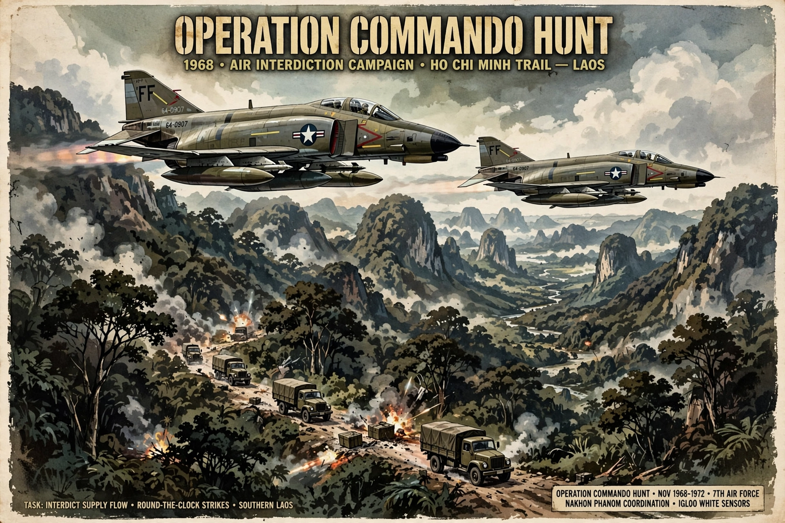

Operation Commando Hunt was a covert U.S. Seventh Air Force and U.S. Navy Task Force 77 aerial interdiction campaign during the Vietnam War. Conducted between 15 November 1968 and 29 March 1972 in southeastern Laos, it sought to destroy North Vietnamese supplies moving south along the Ho Chi Minh Trail to forces in South Vietnam and Cambodia. The campaign ran in seven phases, each corresponding to a dry season (with monsoon interruptions).
| Operation Commando Hunt | |
|---|---|
 Interdiction strikes over southern Laos | |
| Date | 15 November 1968 – 29 March 1972 |
| Location | Southeastern Laos (Ho Chi Minh Trail) |
| Belligerents | United States, South Vietnam vs. North Vietnam (PAVN) |
When President Johnson halted bombing of North Vietnam in November 1968, aircraft were redirected against the trail network in Laos, successor to the Steel Tiger and Tiger Hound programmes. Operation Igloo White seeded the trail with electronic sensors relayed to the Nakhon Phanom surveillance centre in Thailand, whose computers directed strikes.
Fighter-bombers, B-52 Stratofortresses and AC-130 Spectre gunships flew tens of thousands of sorties; Commando Hunt III (1970) and V (1970–71) were among the largest phases, claiming thousands of trucks destroyed and cratering passes such as Mu Gia and Ban Karai. The Air Force estimated up to 80% of supplies were destroyed or consumed en route in some phases.
Historians judge the results more modestly: North Vietnam compensated with more trucks, dispersed repair crews, pipelines, night movement and ever-denser anti-aircraft defences (over 100 US aircraft were lost across the phases). Logistical throughput generally kept pace with requirements in the South, and Commando Hunt ended with the Easter Offensive of 1972. The campaign cost billions of dollars and became a case study in the limits of sensor-based interdiction.